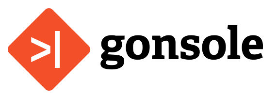
NOTICE (August 2021): This project is discontinued and no longer under active development.
Git Console Plug-in for the Eclipse IDE


Git is a popular version control system.
This project integrates a Git console into the Eclipse IDE.
It lets you enter common Git commands directly into the
Eclipse Console View and displays their output within this view.
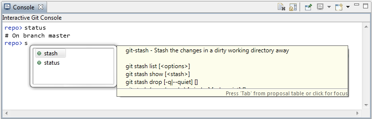
Usage
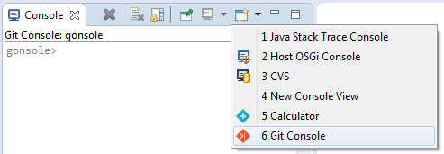
To start a new console session, select Git Console from the Open Console drop-down
of the Console View.
Alternatively, select a file, folder or project and use the Show In menu (Alt+Shift+W)
to open a console session for the corresponding repository.
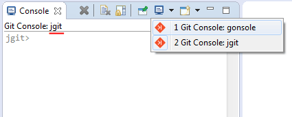
All console sessions are listed in the Display Selected Console drop-down that can be used
to switch between sessions.
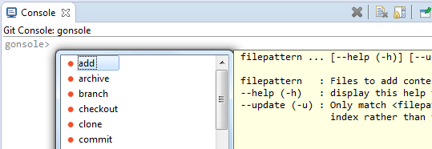
The key combination Ctrl+Space opens a content assist popup that shows all availble
commands.
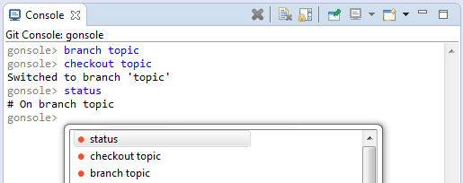
To see a history of recently typed commands, use the Arrow Up key.
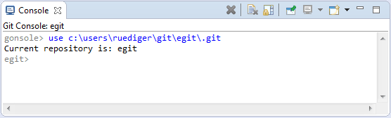
The command prompt indicates the current repository to which the entered commands apply to.
To change the current repository, use the use command.
This command requires either the absolute path to the .git folder of a repository or the name
of a registered repository.
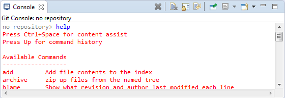
The help command lists a short decription of all available commands.
With help <command>, usage information about a specific command can be obtained.
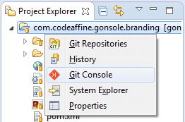
The Show In menu (Alt+Shift+W) has a menu entry that opens a Git Console
and selects the repository to which the selected file or folder belongs.
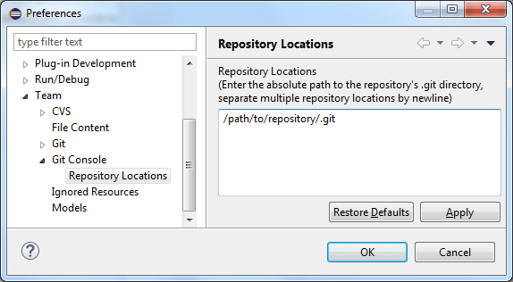
Repositories can be registered with the Git Console either through the
Team > Git Console > Repository Locations preference page or through the EGit
repository view.
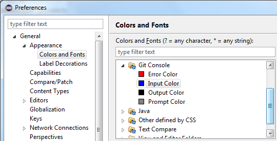
Text colors can be changed on the General > Appearance > Colors and Fonts
preference page.
Please note that changes only affect new console sessions.
Requirements
Eclipse 4.4 (Luna) on JRE 8 or newer.
Installation
Gonsole is available in the Eclipse Marketplace.
The easiest way to install is to drag the Install icon into your Eclipse.
If you prefer, you can also install Gonsole directly from this software repository:
http://rherrmann.github.io/gonsole/repository/
A zipped version of the repository for offline use can be downloaded here:
http://rherrmann.github.io/gonsole/repository/gonsole.zip
Git Included
It is not necessary to have Git installed on your computer for the the plug-in to work.
The plug-in uses JGit, a pure Java implementation of Git,
to interact with the repository.
Source Code
The source code is hosted on GitHub.
License
The code is published under the terms of the Eclipse Public License, version 1.0.
Blog
Updates about the project are published in the Gonsole Blog.
Acknowledgment
The logo was inspired by the Git logo
by Jason Long and stylizes a command prompt.
Thanks to Holger
and Benny for threir valuable input.